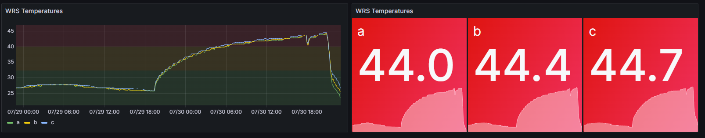
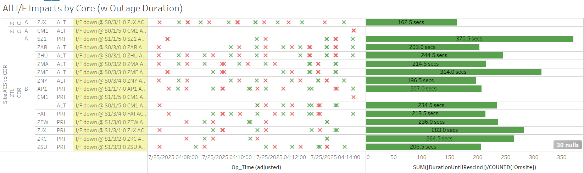

Weekly Highlights 20250723-20250730
7/22 - ZJX RF Site Survey
- 7/22 10:25 - ZJX WRE-C to Maintenance for RF Site Survey activities -- ref LIR 1107747732; Shutdown at 7/22 17:10...
- 7/25 15:10 - ZJX WRE-C returned to Maintenance
after RF Site Survey; restored to Normal
at 7/25 15:40
- ZJX WRE-C - 7/22/25-7/25/25 - RF Site Survey activities -- ref LIR 1107747732
7/22 - POC OAC-A Overtemp
- 7/22 20:44 - POC OAC-A Overtemp alarm; alarm cleared at 7/23 00:04
7/23-7/30 - L1/L2 Bias Errors
- 7/23 11:45 - YYR L1/L2 Bias Error
- 7/24 11:22 - YYR L1/L2 Bias Error
- 7/24 14:32 - MMD L1/L2 Bias Error
- 7/26 03:19 - YYR L1/L2 Bias Error
- 7/26 06:27 - MSD L1/L2 Bias Error
- 7/26 08:35 - MTP L1/L2 Bias Error
- 7/28 01:31 - YYR L1/L2 Bias Error
- 7/29 02:48 - YYR L1/L2 Bias Error
- 7/29 18:34 - MSD L1/L2 Bias Error
7/23 - ZBW WRE-C Fault
- 7/23 19:03 - ZBW WRE-C Faulted with SEs
29,52,53,59; Control Powered and
restored to Normal at 7/23
22:11
- ZBW WRE-C High Disk Utilization cleared after Control Power
7/24 - YYR WRE-A Fault
- 7/24 15:56 - YYR WRE-A Faulted with no correlating Sig Events; Reset and restored to Normal at 7/24 16:36
7/27 - ZDC WRE-A Power Outage
- 7/27 05:54 - ZDC WRE-A went No Data Reported --
PCU-A
knocked offline by power bump at facility-- ref LIR 1024855324
7/27 - MTP WRE Bias
- 7/27 21:54 - MTP WRE Bias Error / PID WRS Down SEs
for all C&Vs
- 7/27 22:10 - MTP WRE-A/C Restarted to address WRE Bias Error; restored to Normal at 7/27 22:30
7/28 - DX1 Network Tap-B SNMP Restarts
- 7/28 11:09 - DX1 GUS Network Tap-B issued SE 1
SNMP Restart; this SE reccurred about once every
~6hr 6m -- ref LIR
1025899924
- 7/28 17:16 - DX1 GUS Network Tap-B issued SE 1 SNMP Restart
- 7/28 23:23 - DX1 GUS Network Tap-B issued SE 1 SNMP Restart
- 7/29 05:29 - DX1 GUS Network Tap-B issued SE 1 SNMP Restart
- 7/29 11:35 - DX1 GUS Network Tap-B issued SE 1 SNMP Restart
- 7/29 17:14 - DX1 GUS Network Tap-B issued SE 1 SNMP Restart
- 7/30 05:53 - DX1 GUS Network Tap-B issued SE 1 SNMP Restart
7/30 - POC OAC-A Overtemp
- 7/30 00:23 - POC OAC-A alarmed with SE 231 Overtemp; last event cleared at 7/30 03:43
7/30 - BRW High Temperatures
- 7/30 03:49 - All BRW WREs alarm with SE 309
Processor Power / Fan Failure due to high
temperatures;
Site tech rpts 100 deg. shelter temp. A/C unit not keeping up.ref LIR 1026935824

7/30 - BR1 CV-GUS Comm Fail
- 7/30 05:40 - BR1 GUS lost comm -- SE 738 CV-GUS Comm Fail, rescinded after 12 seconds; No Switchover even though BR1 in Primary...
7/30 - ZLA WRE-A Freq Std Replaced
- 7/30 18:44 - ZLA WRE-A returned to Maintenance
after replacing Freq Std; restored to
Normal at 7/30 21:08
- ZLA WRE-A - 7/19/25-7/30/25 - Freq Std failed -- ref LIR 1020142224
Various Comm Impacts
* Only captures major / long-term comm outages
CM1 Comms
- 7/23 16:10 - CM1 Ring 2 PRI comms flapping; last event cleared at 7/23 22:44 (~956 seconds total)
- 7/24 15:45 - CM1 Ring 2 PRI comms flapping; last event cleared at 7/24 23:05 (~824 seconds total)
- 7/25 04:14 - CM1 Ring 1 ALT / Ring 2 PRI comms down hard; both lines cleared at 7/25 07:25 (~11455 seconds)
- 7/25 17:47 - CM1 Ring 2 PRI comms flapping; last event cleared at 7/25 22:16 (~496 seconds total)
- 7/28 18:29 - CM1 Ring 2 PRI comms flapping; last event cleared at 7/28 22:20 (~262 seconds total)
- 7/29 15:37 - CM1 Ring 2 PRI comms flapping; last event cleared at 7/29 23:26 (~1196 seconds total)
- 7/30 16:09 - CM1 Ring 2 PRI comms flapping...

Other Sites
- 7/23 18:08 - BET Ring 1 PRI / Ring 2 ALT + BRW Ring 1 PRI / Ring 2 ALT comms down hard; all lines cleared at 7/23 18:10 (~166 seconds)
- 7/23 23:26 - OTZ Ring 1 PRI / Ring 2 ALT comms down hard; both lines cleared at 7/23 23:34 (~488 seconds)
- 7/24 05:09 - YYR Ring 2 comms down hard -- OFFLINE due to Ring 1 down; line cleared at 7/24 07:01 (~6714 seconds)
- 7/24 17:35 - YYR Ring 2 comms down hard -- OFFLINE due to Ring 1 down; line cleared at 7/25 20:19 (~96211 seconds)
- 7/25 04:07 - Major comm event affecting both ZTL Cores and multiple sites; all lines cleared at 04:14 (~370 seconds total)
- 7/25 20:49 - MTP Ring 1 comms restored (down since 7/15 18:49 -- ~1w 3d)
- 7/26 08:29 - MTP Ring 1 comms down hard; line cleared at 7/26 08:33 (~596 seconds)
- 7/27 04:30 - ZME Ring 1 ALT / Ring 2 PRI comms; both lines cleared at 7/27 04:31 (~96 seconds)
- 7/28 04:26 - ZOB Ring 1 PRI / Ring 2 ALT comms down hard; both lines cleared at 7/28 04:37 (~686 seconds)
- 7/28 04:48 - ZOB Ring 1 PRI / Ring 2 ALT comms down hard; both lines cleared at 7/28 05:09 (~1264 seconds)

7/21/25 YYR Ring 1 Comms
- 7/21 11:44 - YYR Ring 1 comms flapping with extended outages... -- ref LIR 1020579524
- 7/21 14:50 - YYR Ring 1 comms down hard...
7/15/25 MTP Ring 1 Comms -- OFFLINE
- 7/15 18:49 - MTP Ring 1 comms down hard -- OFFLINE-- ref LIR 176784821...
6/25/25 OTZ Ring 1 ALT Comms
- 6/25 18:35 - OTZ Ring 1 ALT comms down
hard...
ISR 0625-3787-- ref LIR 1004589824
6/25/25 Brewster Comms Down Hard...
- 6/25 09:09 - BR1 Ring 1 ALT / Ring 2 PRI + BR2 Ring 1 ALT / Ring 2 PRI comms down hard...
- Targeting new circuit implementation on 7/22..
11/6/24 YFB Ring 2 Down Hard...
YFB requires satcom upgrades by NavCanada to restore... ref LIR 892056924
- 11/6/24 18:48 - YFB Ring 2 down hard... both rings to YFB down hard...
5/11/23 Mexico Ring 2 Down Hard...
- 5/11/23 17:01 - MX Ring 2 SatCom upgrade begins; MX Ring 2 OFFLINE until upgrade troubleshooting is complete...
- Targeting network upgrade in CY26
List of current offline WREs
List of current offline WREs -- ref WAAS Status Monitor
All Depot shipments to Mexico are halted until the customs process can be finalized
Currently working to assess MX Inventory to determine equipment refresh and restoration needs...
- YYR WRE-B - 7/4/25-... - Freq Std failed -- ref LIR 1010395424
- MMD WRE-A - 3/31/25-... - Freq Std failed -- ref LIR 953873324
- MTP WRE-B - 11/18/24-... - Receiver inits failing -- ref LIR 898330924
- MMX WRE-A - 10/13/24-... - Freq Std failed -- ref LAD 879853824
- MPR WRE-B - 5/3/24-... - Inits failing -- looks like a bad freq std; due to shipping issues, there is no spare Freq Std and no ETA to recover WRE-B... -- ref LIR 44170821

Major Events


Core I/F Status

Comm Events

Mexico Comm Status